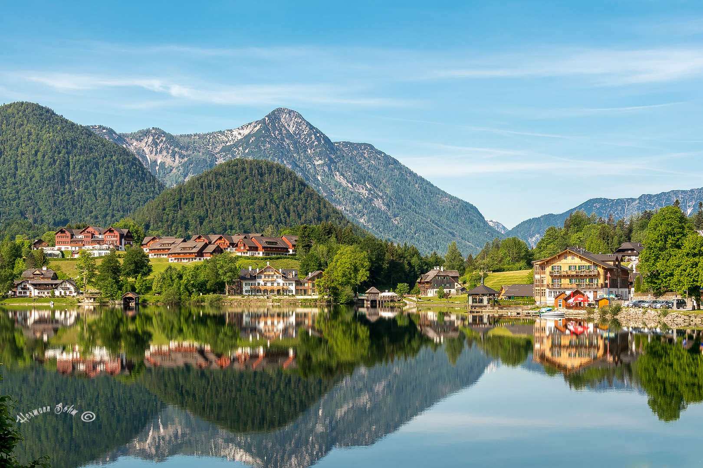

Grundlsee
Der Grundlsee, oft als "Steirisches Meer" bezeichnet, ist mit einer Fläche von 4,22km²
der größte See der Steiermark und liegt im malerischen Ausseerland-Salzkammergut.
Öffentliche Badeplätze und freie Seezugänge am Grundlsee
-
Badestrand in Gößl: Am südlichen Ende des
Sees gelegen, bietet dieser Strandbereich eine großzügige
Liegewiese und direkten Zugang zum Wasser.
-
Badestrand in Grundlsee: In der Nähe
des Ortes Grundlsee gibt es einen öffentlichen Badebereich
mit Liegewiese und Zugang zum See.
-
Badestrand in Bad Aussee: Am westlichen Ende
des Sees befindet sich ein weiterer öffentlicher Badebereich mit
Liegewiese und direktem Zugang zum Wasser.
